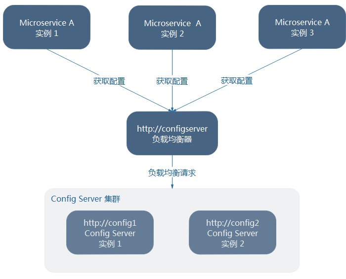
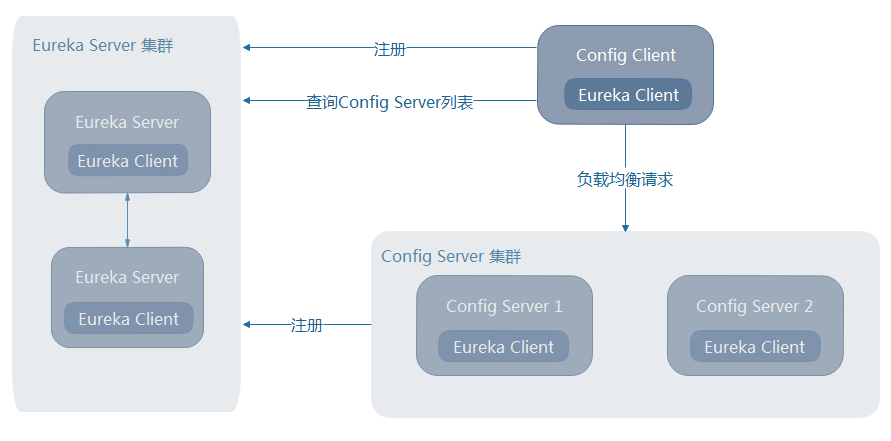

<!DOCTYPE HTML>
<html lang="zh-CN">
<head><meta name="generator" content="Hexo 3.8.0">
    <!--Setting-->
    <meta charset="UTF-8">
    <meta name="viewport" content="width=device-width, user-scalable=no, initial-scale=1.0, maximum-scale=1.0, minimum-scale=1.0">
    <meta http-equiv="X-UA-Compatible" content="IE=Edge,chrome=1">
    <meta http-equiv="Cache-Control" content="no-siteapp">
    <meta http-equiv="Cache-Control" content="no-transform">
    <meta http-equiv="pragma" content="no-cache">
    <meta http-equiv="Cache-Control" content="no-cache, must-revalidate">
    <meta http-equiv="expires" content="Mon Apr 06 2020 02:12:39 GMT+0800 (CST)">
    <meta name="renderer" content="webkit|ie-comp|ie-stand">
    <meta name="apple-mobile-web-app-capable" content="张万众的博客 - 关注Spring Cloud、Docker">
    <meta name="apple-mobile-web-app-status-bar-style" content="black">
    <meta name="format-detection" content="telephone=no,email=no,adress=no">
    <meta name="browsermode" content="application">
    <meta name="screen-orientation" content="portrait">
    <meta name="theme-version" content="1.2.3">
    <meta name="root" content="/">
    
    <!--SEO-->

    <meta name="keywords" content="Spring Cloud,Spring Cloud Config,配置中心">


    <meta name="description" content="前文构建的都是单节点的Config Server，本节来讨论如何构建高可用的Config Server集群，包括Config Server的高可用依赖Git仓库的高可用以及RabbitMQ的高可用。
先来讨论Git仓库的高可用。
Git仓库的高可用由于配置内容存储在Git仓库中，所以要想实现C...">


<meta name="robots" content="all">
<meta name="google" content="all">
<meta name="googlebot" content="all">
<meta name="verify" content="all">
    <!--Title-->


<title>跟我学Spring Cloud（Finchley版）-23-Spring Cloud Config高可用 | 张万众的博客 - 关注Spring Cloud、Docker</title>


    <link rel="alternate" href="../../atom.html" title="张万众的博客 - 关注Spring Cloud、Docker" type="application/atom+xml">


    

    


<link rel="stylesheet" href="../../static/css/bootstrap.min-271a649e0635d6fa1b.css">
<link rel="stylesheet" href="../../static/css/font-awesome.min-ac2bebcf7fb5b26.css">
<link rel="stylesheet" href="../../static/css/style-6f3c140f6eee20e6591da00ec0.css">


    


    <script>
        var _hmt = _hmt || [];
        (function() {
            var hm = document.createElement("script");
            hm.src = "https://hm.baidu.com/hm.js?13766878cde148282622871dd245a973";
            var s = document.getElementsByTagName("script")[0];
            s.parentNode.insertBefore(hm, s);
        })();
    </script>


    

</head>

</html>
<!--[if lte IE 8]>
<style>
    html{ font-size: 1em }
</style>
<![endif]-->
<!--[if lte IE 9]>
<div style="ie">你使用的浏览器版本过低，为了你更好的阅读体验，请更新浏览器的版本或者使用其他现代浏览器，比如Chrome、Firefox、Safari等。</div>
<![endif]-->

<body>
    
    <nav class="main-navigation">
    <div class="container">
        <div class="row clearfix">
            <div class="col-md-12 column">
                <nav class="navbar navbar-default" style="background-color:#fff;border:0;margin-bottom:0" role="navigation">
                    <div class="navbar-header">
                        <button type="button" class="navbar-toggle" data-toggle="collapse" data-target="#navbar-collapse-1">
                            <span class="sr-only">切</span>
                            <span class="icon-bar"></span>
                            <span class="icon-bar"></span>
                            <span class="icon-bar"></span>
                        </button>
                        <a class="logo" href="../../index.html">
                            张万众的博客
                        </a>
                    </div>

                    <div class="collapse navbar-collapse" style="border:0;" id="navbar-collapse-1">
                        <ul class="nav navbar-nav">
                            
                                
                                    <li>
                                        <a href="../../about.html" target="_blank">
                                            <i class="fa fa-user"></i>
                                            关于我
                                        </a>
                                    </li>
                                
                            
                                
                                    <li>
                                        <a href="../../archives.html" target="_blank">
                                            <i class="fa fa-archive"></i>
                                            归档
                                        </a>
                                    </li>
                                
                            
                                
                                    <li class="dropdown">
                                        <a href="#" class="dropdown-toggle" data-toggle="dropdown" data-hover="dropdown">
                                            <i class="fa fa-fire"></i>
                                            系列课程
                                            <strong class="caret"></strong>
                                        </a>
                                        <ul class="dropdown-menu">
                                            
                                                <li>
                                                    <a href="../../docker/00-docker-lession-index.html" target="_blank">
                                                        <i class="fa "></i>
                                                        Docker系列教程
                                                    </a>
                                                </li>
                                            
                                                <li>
                                                    <a href="../spring-cloud-index.html" target="_blank">
                                                        <i class="fa "></i>
                                                        Spring Cloud系列教程
                                                    </a>
                                                </li>
                                            
                                                <li>
                                                    <a href="../../spring-boot/spring-boot-index.html" target="_blank">
                                                        <i class="fa "></i>
                                                        Spring Boot系列教程
                                                    </a>
                                                </li>
                                            
                                        </ul>
                                    </li>
                                
                            
                                
                                    <li class="dropdown">
                                        <a href="#" class="dropdown-toggle" data-toggle="dropdown" data-hover="dropdown">
                                            <i class="fa fa-book"></i>
                                            开源书
                                            <strong class="caret"></strong>
                                        </a>
                                        <ul class="dropdown-menu">
                                            
                                                <li>
                                                    <a href="../../books/rocketmq.html" target="_blank">
                                                        <i class="fa fa-rocket"></i>
                                                        RocketMQ开发者指南
                                                    </a>
                                                </li>
                                            
                                                <li>
                                                    <a href="../../books/skywalking.html" target="_blank">
                                                        <i class="fa fa-skyatlas"></i>
                                                        Skywalking 6.2.0中文文档
                                                    </a>
                                                </li>
                                            
                                        </ul>
                                    </li>
                                
                            
                                
                                    <li class="dropdown">
                                        <a href="#" class="dropdown-toggle" data-toggle="dropdown" data-hover="dropdown">
                                            <i class="fa fa-cog"></i>
                                            工具
                                            <strong class="caret"></strong>
                                        </a>
                                        <ul class="dropdown-menu">
                                            
                                                <li>
                                                    <a href="../../tools/markdown2.html" target="_blank">
                                                        <i class="fa "></i>
                                                        微信排版工具2.0
                                                    </a>
                                                </li>
                                            
                                        </ul>
                                    </li>
                                
                            
                        </ul>
                        
                            <form id="search-form" class="navbar-form navbar-right">
                                <div class="form-group input-group">
                                    <input type="text" id="local-search-input" class="form-control" placeholder="搜我...">
                                    <span class="input-group-btn">
                                        <a class="btn btn-default">
                                            <i class="fa fa-search"></i>
                                        </a>
                                    </span>
                                </div>
                                <div id="local-search-result" class="local-search-result-cls"></div>
                            </form>
                        
                    </div>
                </nav>
            </div>
        </div>
    </div>
</nav>

    <a href="javascript:;" target="_blank">
        
    </a>


    <section class="content-wrap">
        <div class="container">
            <div class="row">
                <main class="col-md-8 main-content m-post">
                    

<p id="process"></p>
<article class="post">
    <div class="post-head">
        <h1 id="跟我学Spring Cloud（Finchley版）-23-Spring Cloud Config高可用">
            
                跟我学Spring Cloud（Finchley版）-23-Spring Cloud Config高可用
            
        </h1>
        <div class="post-meta">
    
        <span class="categories-meta fa-wrap">
            <i class="fa fa-folder-open-o"></i>
            <a class="category-link" href="javascript:;">Spring Cloud</a>
        </span>
    

    
        <span class="fa-wrap">
            <i class="fa fa-tags"></i>
            <span class="tags-meta">
                
                    <a class="tag-link" href="javascript:;">Spring Cloud</a> <a class="tag-link" href="javascript:;">Spring Cloud Config</a> <a class="tag-link" href="../../tags/配置中心/index.html">配置中心</a>
                
            </span>
        </span>
    

    
        
        <span class="fa-wrap">
            <i class="fa fa-clock-o"></i>
            <span class="date-meta">2019/03/04</span>
        </span>
        
            <span class="fa-wrap">
                <i class="fa fa-eye"></i>
                <span id="busuanzi_value_page_pv"></span>
            </span>
        
    
</div>
        
        
    </div>
    
    <div class="post-body post-content" id="post-content">
        
    <div class="toc-article">
        <strong>
            目录
        </strong>
        <div class="toc-content">
            <ol class="toc"><li class="toc-item toc-level-1"><a class="toc-link" href="#Git仓库的高可用"><span class="toc-text">Git仓库的高可用</span></a></li><li class="toc-item toc-level-1"><a class="toc-link" href="#RabbitMQ的高可用"><span class="toc-text">RabbitMQ的高可用</span></a></li><li class="toc-item toc-level-1"><a class="toc-link" href="#Config-Server自身的高可用"><span class="toc-text">Config Server自身的高可用</span></a><ol class="toc-child"><li class="toc-item toc-level-2"><a class="toc-link" href="#Config-Server未注册到Eureka-Server上"><span class="toc-text">Config Server未注册到Eureka Server上</span></a></li><li class="toc-item toc-level-2"><a class="toc-link" href="#Config-Server注册到Eureka-Server上"><span class="toc-text">Config Server注册到Eureka Server上</span></a></li></ol></li></ol>
        </div>
    </div>


        <p>前文构建的都是单节点的Config Server，本节来讨论如何构建高可用的Config Server集群，包括Config Server的高可用依赖Git仓库的高可用以及RabbitMQ的高可用。</p>
<p>先来讨论Git仓库的高可用。</p>
<h1 id="Git仓库的高可用"><a href="#Git仓库的高可用" class="headerlink" title="Git仓库的高可用"></a>Git仓库的高可用</h1><p>由于配置内容存储在Git仓库中，所以要想实现Config Server的高可用，必须有一个高可用的Git仓库。有两种方式可以实现Git仓库的高可用。</p>
<ul>
<li>使用第三方Git仓库：这种方式非常简单，可使用例如GitHub、BitBucket、Gitee、Coding等提供的仓库托管服务，这些服务本身就已实现了高可用。</li>
<li>自建Git仓库管理系统：使用第三方服务的方式虽然省去了很多烦恼，但是很多场景下，倾向于自建Git仓库管理系统。此时就需要保证自建Git的高可用。</li>
</ul>
<p>以 GitLab 为例，读者可参照官方文档搭建高可用的 GitLab：</p>
<ul>
<li>高可用 GitLab 复杂度分析： <a href="javascript:;" target="_blank" rel="noopener">https://about.gitlab.com/high-availability/</a></li>
<li>高可用GitLab搭建文档： <a href="javascript:;" target="_blank" rel="noopener">https://docs.gitlab.com/ce/administration/high_availability/README.html</a></li>
</ul>
<h1 id="RabbitMQ的高可用"><a href="#RabbitMQ的高可用" class="headerlink" title="RabbitMQ的高可用"></a>RabbitMQ的高可用</h1><p>Spring Cloud Config使用Spring Cloud Bus实现配置批量刷新。而由于Spring Cloud Bus依赖RabbitMQ（当然也可使用其他MQ，例如Kafka或者RocketMQ），所以RabbitMQ的高可用也是必不可少的。</p>
<p>搭建高可用RabbitMQ的资料，读者可详见：<a href="javascript:;" target="_blank" rel="noopener">https://www.rabbitmq.com/ha.html</a>。由于比较简单，笔者不做赘述。当然，也可使用云平台的提供的RabbitMQ服务。</p>
<h1 id="Config-Server自身的高可用"><a href="#Config-Server自身的高可用" class="headerlink" title="Config Server自身的高可用"></a>Config Server自身的高可用</h1><p>本节来讨论如何实现Config Server自身的高可用。笔者分两种场景进行讨论。</p>
<h2 id="Config-Server未注册到Eureka-Server上"><a href="#Config-Server未注册到Eureka-Server上" class="headerlink" title="Config Server未注册到Eureka Server上"></a>Config Server未注册到Eureka Server上</h2><p>对于这种情况，Config Server的高可用可借助一个负载均衡器来实现，如图9-6所示。</p>
<p></p>
<p>如图9-6，各个微服务将请求发送到负载均衡器，负载均衡器将请求转发到其代理的其中一个Config Server节点。这样，就可以实现Config Server的高可用。</p>
<h2 id="Config-Server注册到Eureka-Server上"><a href="#Config-Server注册到Eureka-Server上" class="headerlink" title="Config Server注册到Eureka Server上"></a>Config Server注册到Eureka Server上</h2><p>这种情况下，Config Server的高可用相对简单，只须将多个Config Server节点注册到Eureka Server上，即可实现Config Server的高可用。架构如图9-7所示。</p>
<p></p>

        <h2>相关文章</h2><ul><li><a href="../config-server-encrypt-decrypt/index.html">Config Server——配置内容的加密与解密</a></li><li><a href="../finchley-20/index.html">跟我学Spring Cloud（Finchley版）-20-Spring Cloud Config-Git仓库配置详解</a></li><li><a href="../finchley-19/index.html">跟我学Spring Cloud（Finchley版）-19-配置中心-Spring Cloud Config</a></li><li><a href="../finchley-21/index.html">跟我学Spring Cloud（Finchley版）-21-Spring Cloud Config-配置属性加解密</a></li><li><a href="../finchley-22/index.html">跟我学Spring Cloud（Finchley版）-22-Spring Cloud Config-配置动态刷新</a></li></ul>
    </div>
    
    <div class="post-footer">
        <div class="col-sm-10">
            <div>
                <b>本文链接</b>：<a href="" target="_blank">跟我学Spring Cloud（Finchley版）-23-Spring Cloud Config高可用</a>
            </div>
            <div>
                
                    转载声明：本博客由张万众创作，采用 <a href="javascript:;" target="_blank"> CC BY 3.0 CN </a> 许可协议。可自由转载、引用，但需署名作者且注明文章出处。如转载至微信公众号，请在文末添加作者公众号二维码。
                
            </div>
            <div>
                
            </div>
        </div>
        <div class="col-sm-2">
            
        </div>
    </div>
</article>

<div class="article-nav prev-next-wrap clearfix">
    
        <a target="_blank" href="../../spring-cloud-alibaba/02-nacos-service-registry/index.html" class="pre-post btn btn-default" title="Spring Cloud Alibaba系列教程-02-将应用注册到Nacos上">
            <i class="fa fa-angle-left fa-fw"></i><span class="hidden-lg">上一篇</span>
            <span class="hidden-xs">Spring Cloud Alibaba系列教程-02-将应用注册到Nacos上</span>
        </a>
    
    
        <a target="_blank" href="../../install/kubernetes-deploy-by-kubespray2.8.3/index.html" class="next-post btn btn-default" title="使用Kubespray 2.8.3部署生产可用的Kubernetes集群（1.12.5）">
            <span class="hidden-lg">下一篇</span>
            <span class="hidden-xs">使用Kubespray 2.8.3部署生产可用的Kubernetes集群（1.12.5）</span><i class="fa fa-angle-right fa-fw"></i>
        </a>
    
</div>


    <div id="comments">
        
   <p>评论系统未开启，无法评论！</p>

    </div>


                </main>
                
    <aside class="col-md-4 sidebar">
        
        <div class="widget about-me">
    <div class="row">
        <div class="col-md-5">
            
        </div>
        <div class="col-md-7">
            <a class="series-a" href="javascript:void(0)">公众号</a>
            <ul>
                <li>• 技术干货推送</li>
                <li>• 免费资料领取</li>
                <li><b>• 扫码领取更多惊喜</b></li>
            </ul>
        </div>
    </div>
    
        <div class="row">
            <div class="col-md-5">
                
            </div>
            <div class="col-md-7">
                <a class="series-a" href="javascript:void(0)">小程序</a>
                <ul>
                    <li>• 原创笔记</li>
                    <li>• 独家心法</li>
                    <li><b>• 扫码领取</b></li>
                </ul>
            </div>
        </div>
    
</div>


        
        
    <div class="ad">
        <div class="row">
            <div class="col-md-12">
                <a href="javascript:;" rel="nofollow" target="_blank">
                    
                </a>
            </div>
        </div>
    </div>


        
        <div class="widget">
    <div class="row">
        <div class="col-md-3">
            
        </div>
        <div class="col-md-9">
            <a class="series-a" target="_blank" href="../spring-cloud-index.html">Spring Cloud系列教程</a>
            <p>全面、通俗易懂的Spring Cloud教程</p>
        </div>
    </div>
    <div class="row">
        <div class="col-md-3">
            
        </div>
        <div class="col-md-9">
            <a class="series-a" target="_blank" href="javascript:;">Spring Cloud Alibaba视频教程</a>
            <p>全网唯一，你值得拥有</p>
        </div>
    </div>
    <div class="row">
        <div class="col-md-3">
            
        </div>
        <div class="col-md-9">
            <a class="series-a" target="_blank" href="../../docker/00-docker-lession-index.html">Docker系列教程</a>
            <p>Docker系列</p>
        </div>
    </div>
    <div class="row">
        <div class="col-md-3">
            
        </div>
        <div class="col-md-9">
            <a class="series-a" target="_blank" href="../../spring-boot/spring-boot-index.html">Spring Boot系列教程</a>
            <p>Boot是基石...</p>
        </div>
    </div>
</div>


        
        
    <div class="widget">
        <h3 class="title">分类</h3>
        <ul class="category-list"><li class="category-list-item"><a class="category-list-link" href="javascript:;"><i class="fa" aria-hidden="true">Docker</i></a><span class="category-list-count">31</span></li><li class="category-list-item"><a class="category-list-link" href="javascript:;"><i class="fa" aria-hidden="true">Kubernetes</i></a><span class="category-list-count">2</span></li><li class="category-list-item"><a class="category-list-link" href="javascript:;"><i class="fa" aria-hidden="true">Spring Boot</i></a><span class="category-list-count">6</span></li><li class="category-list-item"><a class="category-list-link current" href="javascript:;"><i class="fa" aria-hidden="true">Spring Cloud</i></a><span class="category-list-count">94</span></li><li class="category-list-item"><a class="category-list-link" href="javascript:;"><i class="fa" aria-hidden="true">Spring Cloud Alibaba</i></a><span class="category-list-count">16</span></li><li class="category-list-item"><a class="category-list-link" href="javascript:;"><i class="fa" aria-hidden="true">Spring Cloud Stream</i></a><span class="category-list-count">1</span></li><li class="category-list-item"><a class="category-list-link" href="../../categories/其他/index.html"><i class="fa" aria-hidden="true">其他</i></a><span class="category-list-count">13</span></li><li class="category-list-item"><a class="category-list-link" href="../../categories/安装教程/index.html"><i class="fa" aria-hidden="true">安装教程</i></a><span class="category-list-count">7</span></li><li class="category-list-item"><a class="category-list-link" href="../../categories/工作/index.html"><i class="fa" aria-hidden="true">工作</i></a><span class="category-list-count">20</span></li></ul>
    </div>


        
        
        
        

        
    </aside>

            </div>
        </div>
    </section>
    <footer class="main-footer">
    <div class="container">
        <div class="row">
        </div>
    </div>
</footer>

<a id="back-to-top" class="icon-btn hide">
	<i class="fa fa-chevron-up"></i>
</a>


    <div class="copyright">
    <div class="container">
        <div class="row">
            <div class="col-sm-12">
                <div class="busuanzi">
    
        访问量:
        <strong id="busuanzi_value_site_pv">
            <i class="fa fa-spinner fa-spin"></i>
        </strong>
        &nbsp; | &nbsp;
        访客数:
        <strong id="busuanzi_value_site_uv">
            <i class="fa fa-spinner fa-spin"></i>
        </strong>
        &nbsp; <strong>Since 2018-12-26</strong>
    
</div>

            </div>
            <div class="col-sm-12">
                <span>Copyright &copy; 2017
                </span> |
                <span>
                    Powered by <a href="javascript:;" class="copyright-links" target="_blank" rel="nofollow">Hexo</a>
                </span> |
                <span>
                    Theme by <a href="javascript:;" class="copyright-links" target="_blank" rel="nofollow">ITMuch</a>
                </span>
            </div>
        </div>
    </div>
</div>

<script src="../../static/js/jquery.min.js"></script>
<script src="../../static/js/bootstrap.min.js"></script>
<script src="../../static/js/bootstrap-hover-dropdown.min.js"></script>

    <script src="../../static/js/search-3f4fbd0557c869ca0516ebb5f.js"></script>


    <script async="" src="../../static/js/busuanzi.pure.mini.js"></script>


<script src="../../static/js/app-da10bb3b2ae5c8348d2bd2cc3faf.js"></script>


</body>
